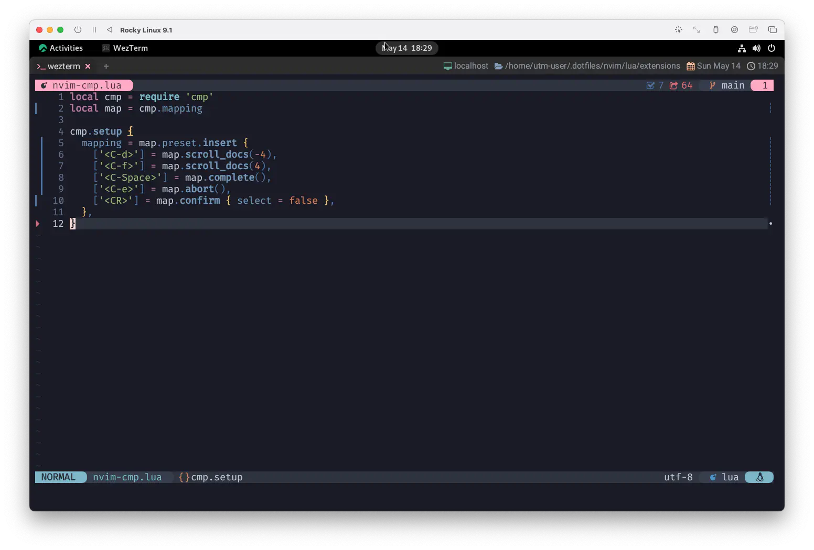

nvim-cmp
LSPと言われて真っ先に "コード補完" を思い浮かべる人は多いでしょう。わたしがそうです😤
A completion engine plugin for neovim written in Lua. Completion sources are installed from external repositories and "sourced".
Lua で書かれた neovim 用の補完エンジンプラグインです。 補完ソースは外部リポジトリからインストールし、使用します。
nvim-cmpは補完ソースから候補を選び出して示してくれちゃうプラグインです。
上にもあるように、補完に使用するソースは外部リポジトリからインストールする必要があります。
なので「あっちこっち色々インストールしてこなきゃいけない❓🙄それはめんどくさい😮💨」な〜んて考えてしまうかもしれません。
が❗❗
安心してください。入ってますよ❗
そこをきっちりサポートしてくれる、とにかく明るいmason.nvimが既に入ってますよー❗
And in the middle of negotiations
You break down
そして交渉中に
きみは泣き崩れる
あらぬ誤解を招きそうな曲が聴こえてきましたが、ついに Abbey Road 2 へと辿り着きました🤗
壮大なメドレー 3 はここから始まります❗楽しんでいきましょう😆
Readme!
-
There is a GitHub issue that documents breaking changes for nvim-cmp. Subscribe to the issue to be notified of upcoming breaking changes.
nvim-cmpの変更点を記録したGitHub issueが存在します。この issue を購読すると、今後の速報を通知してくれます。
-
This is my hobby project. You can support me via GitHub sponsors.
これは私の趣味のプロジェクトです。GitHubのスポンサーを通じて私をサポートすることができます。
-
Bug reports are welcome, but don't expect a fix unless you provide minimal configuration and steps to reproduce your issue.
バグレポートは歓迎しますが、最小限の設定と問題を再現する手順を提供しない限り、修正を期待しないでください。
-
The
cmp.mapping.preset.*is pre-defined configuration that aims to mimic neovim's native like behavior. It can be changed without announcement. Please manage key-mapping by yourself.cmp.mapping.preset.* は、neovim のネイティブのような動作を模倣することを目的とした、あらかじめ定義された設定です。予告なく変更することが可能です。キーマッピングはご自身で管理してください。
これはもう「Readme❤️」とかそういうレベルじゃないです。「Readme❗」ですから。
Monday morning, turning back
Yellow lorry slow, nowhere to go
月曜の朝、引き返す
行くあてのない黄色いトラックはゆっくりと、
Concept
-
Full support for LSP completion related capabilities
LSP補完関連機能をフルサポート
-
Powerful customizability via Lua functions
Lua関数による強力なカスタマイズ性
-
Smart handling of key mappings
キーマッピングのスマートな操作性
-
No flicker
フリッカーなし
nvim-cmpは機能がプラグイン単位で細分化されているので、
必要な機能を持ったプラグインを選んで載っけていくことで、自分のニーズに合った補完魔法を習得し、詠唱・発現できるようになります。
But oh, that magic feeling, nowhere to go
しかし行くあてのない、ああ、あの魔法のような感覚
Setup
Recommended Configuration
推奨構成
...と、いうことで例が示されているんですが、 いきなりこれをそのまま組み込んでしまうと、その物量に圧倒されてしまいます😵💫
なので、一歩ずつ確実に行きましょう🍥
mapping
local cmp = require 'cmp'
local map = cmp.mapping
cmp.setup {
mapping = map.preset.insert {
['<C-d>'] = map.scroll_docs(-4),
['<C-f>'] = map.scroll_docs(4),
['<C-Space>'] = map.complete(),
['<C-e>'] = map.abort(),
['<CR>'] = map.confirm { select = false },
},
}
オフィシャルに示されているコードより少し省略した書き方をしていますが、動作は全く同じです😉
キーマップの設定については:h cmp-mappingの中に記載されています。
Mapping cmp-mapping
Nvim-cmp's mapping mechanism is complex but flexible and user-friendly.
Nvim-cmpのマッピング機構は複雑ですが、柔軟でユーザーフレンドリーです。
You can specify a mapping function that receives a `fallback` function as an argument.
The `fallback` function can be used to call an existing mapping.
引数として `fallback` 関数を受け取るマッピング関数を指定することができます。
fallback` 関数は、既存のマッピングを呼び出すために使用することができます。
There are also builtin mapping helper functions you can use:
また、ビルトインされたマッピングヘルパー関数を使用することができます：
Built-in mapping helpers are only available as a configuration option.
If you want to call nvim-cmp features directly, please use cmp-function instead.
マッピングヘルパーは、設定オプションとしてのみ利用可能です。
nvim-cmp の機能を直接呼び出したい場合は、代わりに cmp-function を使用してください。
これも自分で細かく制御しようとするとなんか大変なんで、 マッピングヘルパー関数をあらかじめ用意してくれてるってことですね❗
おかげでらくらく〜😽 
Install
そしたらこっちも。
use {
'hrsh7th/nvim-cmp',
config = function() require 'extensions.nvim-cmp' end,
}
はい、らくらく〜😽
Soon we'll be away from here
Step on the gas and wipe that tear away
すぐに発とう
アクセルを吹かし 涙は拭こう
I'll take you all.
今回はnvim-cmpのインストールとキーマッピングだけなので、
まだ何も変化がありませんが、これも慌てずどっしり構えておけば超だいじょうぶです😤
そして次回、Language Server Protocolを使用した補完を行います。
喰らえ❗いきなりメインディッシュだ❗❗
Abbey Road メドレーのように、流れるように駆け抜けていきましょう❗
1: You Never Give Me Your Money (by The Beatles): 本作は1969年初頭におけるバンドのビジネス的な取引をテーマとしており、 McCartney は「ここでの僕は、Allen Klein の僕らに対する態度を正面から非難している。 金は全然入ってこなくて、あるのはおかしな書類だけ。約束ばかりで何ひとつ実現しないというわけさ」と語っている。 John Lennon と Paul McCartney が Lennon-McCartney 名義で制作した楽曲は Northen Songs が管理権を持っていたが、 経営不振となったころに過半数の株式が "Sony Music Publishing LLC" によって買収された。 McCartney は、マネージャーの Brian Epstein の死去以降、グループをまとめる立場にあった。 それにより自身の会社 "Apple Corps Ltd." を立ち上げ、財政面の整理を McCartney 以外の3人のマネージャーとなった Klein が担当していたが、 会社は財政難に陥り亀裂が生じていた。Wikipediaより
2: アルバムの評価としては、B面の大部分を占めるメドレーへの評価が非常に高い。 このメドレーについて John Lennon は「A面は良いけどB面はちょっとね。あれはジャンク（ガラクタ）を集めただけだと思うよ」と述べているが、 Paul McCartney と Ringo Starr は「B面のメドレーは僕らの最高傑作のひとつ」と発言している。Wikipediaより
3: わたし自身は John Lennon が一番好きですが、Abbey Road はA面もB面も大好きです。アナログレコードで聴いたことはないんだけど😅